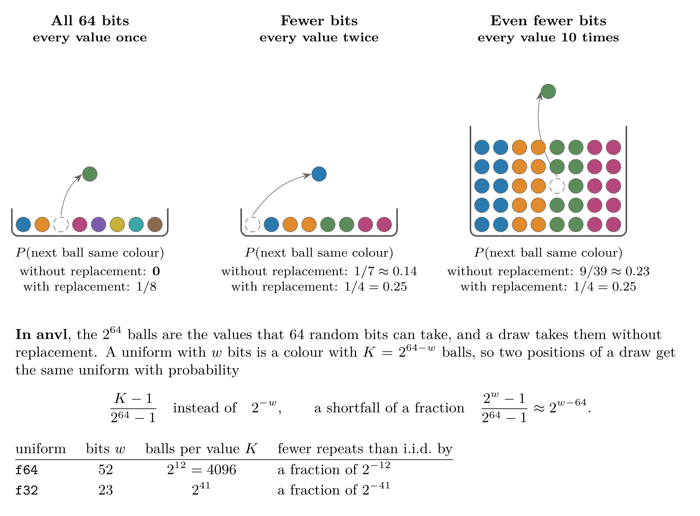
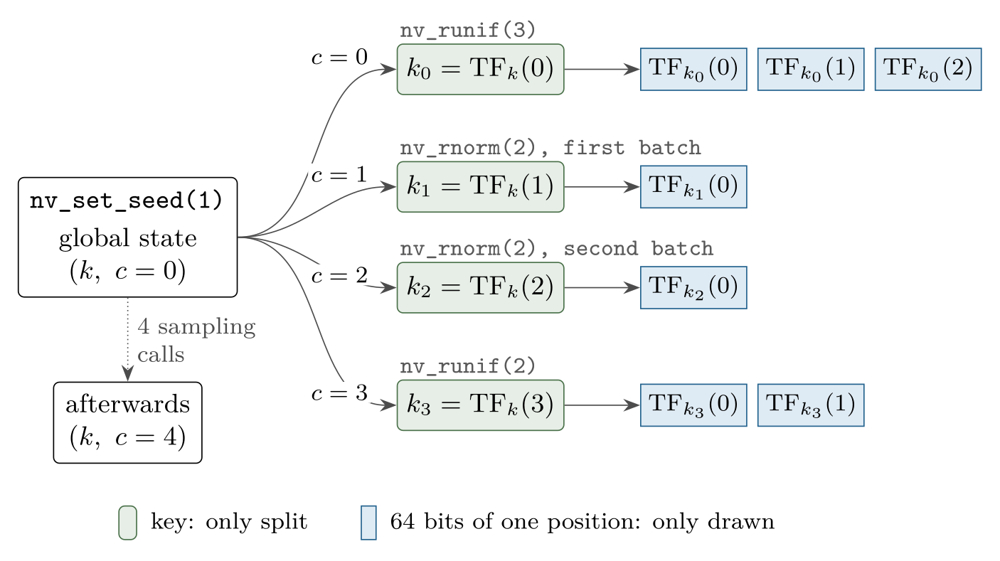
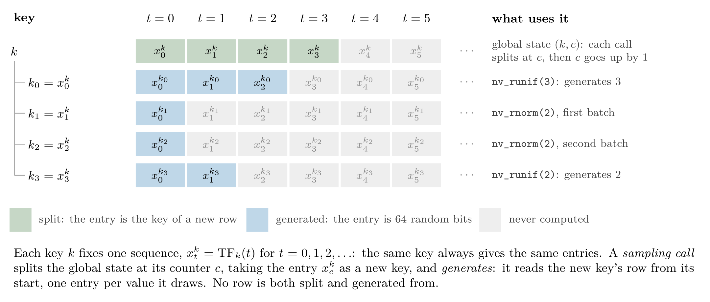

In this article, we will explain how to generate (pseudo) random numbers with {anvl}, which guarantees the draws come with, and how they are generated. {anvl} uses the counter-based ThreeFry-2x32 generator (Salmon et al. 2011), and adopts the mechanism around it, how a seed becomes a key and how every draw derives a fresh key from it, from JAX (Bradbury et al. 2018). The first part is what you need to use the samplers; the how it works part at the end describes the generator itself.
As in base R, random number generation uses a global state, the
global random state, that every draw advances, and
nv_set_seed() seeds it like set.seed()
does:
library(anvl)
nv_set_seed(42L)
nv_runif(3L)
#> AnvlArray
#> 0.5303
#> 0.3134
#> 0.9015
#> [ CPUf32{3} ]
nv_runif(3L)
#> AnvlArray
#> 0.7277
#> 0.7879
#> 0.1817
#> [ CPUf32{3} ]
nv_set_seed(42L)
nv_runif(3L)
#> AnvlArray
#> 0.5303
#> 0.3134
#> 0.9015
#> [ CPUf32{3} ]Calling nv_set_seed() is optional. Without it, the first
draw derives the global random state from base R’s RNG, so a
set.seed() before the first draw makes the draws
reproducible as well. This happens only once, though: after the first
draw, calling set.seed() again does not reseed {anvl}’s
random state; call nv_set_seed() for that.
The available samplers are listed in the distributions section of the reference. For example, below we sample a matrix of shape \(2 \times 3\) from a normal distribution.
nv_rnorm(c(2, 3), mean = 0, sd = 1)
#> AnvlArray
#> -1.3997 0.4528 -0.3138
#> -1.7328 -0.8014 0.4427
#> [ CPUf32{2,3} ]The samplers draw at the default float data type, f32
unless set otherwise (see default_dtypes()). For more
precision, draw at f64, per call with
dtype = "f64" or for all calls with
options(anvl.default_dtypes = c(float = "f64", int = "i32")).
Seeding for a scope
with_nv_seed() and local_nv_seed() are the
counterparts of withr::with_seed() and
withr::local_seed(). They seed the global random state for
one expression or for the calling function only, and restore the random
state from before afterwards, so the draws around them are not
affected:
nv_set_seed(1L)
with_nv_seed(42L, nv_runif(2L))
#> AnvlArray
#> 0.5303
#> 0.3134
#> [ CPUf32{2} ]
with_nv_seed(42L, nv_runif(2L))
#> AnvlArray
#> 0.5303
#> 0.3134
#> [ CPUf32{2} ]
# the global random state continues as if the two calls had not happened
nv_runif(2L)
#> AnvlArray
#> 0.7026
#> 0.2348
#> [ CPUf32{2} ]
nv_set_seed(1L)
nv_runif(2L)
#> AnvlArray
#> 0.7026
#> 0.2348
#> [ CPUf32{2} ]Inside a function, local_nv_seed() keeps the seed until
the function returns:
simulate <- function(n) {
local_nv_seed(123L)
nv_rnorm(n)
}
simulate(3L)
#> AnvlArray
#> 0.8457
#> 0.2334
#> 0.1786
#> [ CPUf32{3} ]
simulate(3L)
#> AnvlArray
#> 0.8457
#> 0.2334
#> 0.1786
#> [ CPUf32{3} ]Seeds and random states
A seed and a random state are two different things, as in base R,
where set.seed() takes a seed and .Random.seed
holds the random state. The random state is the whole state of
the generator, which every draw advances. In {anvl}, it consists of two
64-bit numbers, a key and a counter:
- The key decides which numbers the draws give, and draws never change it.
- The counter counts the sampling calls made with the key. A sampling call draws its numbers from a fresh key, which it derives from the key and the counter, and then increments the counter by one.
A seed is only a way to choose a random state to start from:
nv_set_seed() turns the 32-bit integer it is given into a
key and sets the counter to 0. Without nv_set_seed(), the
first draw instead builds the key from two uniforms of base R’s
runif(), each scaled to a 32-bit integer, and sets the
counter to 0. nv_get_rng_state() returns a copy of the
global random state, an AnvlRngState, which prints the key
and the counter in hexadecimal:
nv_set_seed(42L)
nv_get_rng_state()
#> <AnvlRngState> key 0x000000000000002a, counter 0x0000000000000000The seed 42L gave the key 0x2a, which is 42
in hexadecimal. Draws keep the key and advance the counter:
nv_runif() makes one sampling call, and
nv_rnorm() two, one for each of the two batches of uniforms
the Box-Muller transform takes.
invisible(nv_runif(1000L))
nv_get_rng_state()
#> <AnvlRngState> key 0x000000000000002a, counter 0x0000000000000001
invisible(nv_rnorm(3L))
nv_get_rng_state()
#> <AnvlRngState> key 0x000000000000002a, counter 0x0000000000000003So a seed can only say where a sequence of draws starts, while a random state says where in it the draws are. Not every random state starts the sequence of a seed either: the seeds give only \(2^{32} - 1\) of the \(2^{64}\) keys, one for each R integer, and a key built from base R’s RNG is almost never one of them.
The splitting keys section describes how a sampling call derives its key.
Saving and restoring the random state
As nv_get_rng_state() returns a copy, the draws after it
do not advance it, and nv_set_rng_state() makes it the
global random state again. Where nv_set_seed() restarts a
sequence from its beginning, the two continue it where it stopped,
e.g. to resume a simulation:
nv_set_seed(42L)
rng_state <- nv_get_rng_state()
nv_runif(3L)
#> AnvlArray
#> 0.5303
#> 0.3134
#> 0.9015
#> [ CPUf32{3} ]
nv_set_rng_state(rng_state)
nv_runif(3L)
#> AnvlArray
#> 0.5303
#> 0.3134
#> 0.9015
#> [ CPUf32{3} ]Random states of their own
nv_rng_state() creates a random state of its own from a
seed. with_nv_rng_state() and, inside a function,
local_nv_rng_state() make it the random state the samplers
draw from, the counterparts of with_nv_seed() and
local_nv_seed(). A random state is a reference object:
every draw from it advances it in place, as draws from the global random
state advance that, and the global random state is left alone:
nv_set_seed(1L)
rng <- nv_rng_state(42L)
with_nv_rng_state(rng, nv_runif(3L))
#> AnvlArray
#> 0.5303
#> 0.3134
#> 0.9015
#> [ CPUf32{3} ]
with_nv_rng_state(rng, nv_runif(3L))
#> AnvlArray
#> 0.7277
#> 0.7879
#> 0.1817
#> [ CPUf32{3} ]
rng
#> <AnvlRngState> key 0x000000000000002a, counter 0x0000000000000002
# the global random state was not drawn from
nv_get_rng_state()
#> <AnvlRngState> key 0x0000000000000001, counter 0x0000000000000000A random state of a seed draws what the global random state of the
same seed draws, so nv_rng_state(42L) above drew what
nv_set_seed(42L) draws. Random states of their own keep
apart what should not depend on each other, e.g. one per chain of a
simulation, so that adding a draw to one chain does not change the
numbers of another.
A compiled function takes a random state as an argument, like any
other, and makes it the samplers’ random state with
local_nv_rng_state():
step <- jit(function(x, rng) {
local_nv_rng_state(rng)
x + nv_rnorm(2L) + nv_runif(2L)
})
chain_1 <- nv_rng_state(1L)
chain_2 <- nv_rng_state(2L)
step(nv_array(c(0, 0)), chain_1)
#> AnvlArray
#> 1.4441
#> -1.0565
#> [ CPUf32{2} ]
step(nv_array(c(0, 0)), chain_2)
#> AnvlArray
#> 0.5732
#> 1.4849
#> [ CPUf32{2} ]
chain_1
#> <AnvlRngState> key 0x0000000000000001, counter 0x0000000000000003The function is compiled only once, whatever random state it is passed, and it draws what the same code run eagerly draws from it. A random state can also be passed inside a list, e.g. one per chain in a list of chain states.
Passing a random state to a compiled function does not by itself
change what the function draws from: only the samplers in the scope of
local_nv_rng_state() or with_nv_rng_state()
draw from it, and every other sampler draws from the global random state
as usual. A random state the function takes but never draws from is left
as it is:
nv_set_seed(1L)
f <- jit(function(x, rng) x + nv_runif(2L))
rng <- nv_rng_state(3L)
invisible(f(nv_array(c(0, 0)), rng))
# `nv_runif(2L)` drew from the global random state, not from `rng`
rng
#> <AnvlRngState> key 0x0000000000000003, counter 0x0000000000000000
nv_get_rng_state()
#> <AnvlRngState> key 0x0000000000000001, counter 0x0000000000000001A compiled function can also draw from a random state it closes over,
rather than takes: the program then takes its key and counter as it
takes those of the global random state, reading them at every call from
the random state the function closed over when it was traced. In a
compiled function, local_nv_rng_state() cannot be called
inside the body of a loop: call it before the loop, as the random state
it sets reaches the loop bodies after it.
A compiled function cannot draw from the same random state as two different ones, though, e.g. one passed to it twice, which would draw the same numbers: the call signals an error and leaves the random state as it was. The random state section of the internals article explains how a compiled function draws from random states, also in loops and branches.
Properties
This section summarizes what to expect from the numbers: how compiled code draws them, how many there are before they repeat, and how independent they are. It draws on a statistical analysis of the generator, which ran the random bits through the TestU01 batteries SmallCrush and Crush and through PractRand up to 256 GB, and found no defect.
Compiled and eager code
A compiled function draws the same numbers as the same code run eagerly, and leaves the global random state where the eager code would leave it:
f <- function() list(nv_runif(2L), nv_rnorm(2L))
nv_set_seed(1L)
f()
#> [[1]]
#> AnvlArray
#> 0.7026
#> 0.2348
#> [ CPUf32{2} ]
#>
#> [[2]]
#> AnvlArray
#> -0.3611
#> -0.9505
#> [ CPUf32{2} ]
nv_set_seed(1L)
jit(f)()
#> [[1]]
#> AnvlArray
#> 0.7026
#> 0.2348
#> [ CPUf32{2} ]
#>
#> [[2]]
#> AnvlArray
#> -0.3611
#> -0.9505
#> [ CPUf32{2} ]Every sampling call starts from a fresh key, so the size of a draw does not change what later draws give:
nv_set_seed(1L)
invisible(nv_runif(1L))
nv_runif(3L)
#> AnvlArray
#> 0.4036
#> 0.5489
#> 0.2226
#> [ CPUf32{3} ]
nv_set_seed(1L)
invisible(nv_runif(1000L))
nv_runif(3L)
#> AnvlArray
#> 0.4036
#> 0.5489
#> 0.2226
#> [ CPUf32{3} ]For the same reason, two draws of one value do not give the values of one draw of two values:
nv_set_seed(1L)
c(as_array(nv_runif(1L)), as_array(nv_runif(1L)))
#> [1] 0.7026153 0.4036463
nv_set_seed(1L)
nv_runif(2L)
#> AnvlArray
#> 0.7026
#> 0.2348
#> [ CPUf32{2} ]Within one draw, though, a value depends only on its position, so a smaller draw is the start of a larger one:
with_nv_seed(1L, nv_runif(3L))
#> AnvlArray
#> 0.7026
#> 0.2348
#> 0.8179
#> [ CPUf32{3} ]
with_nv_seed(1L, nv_runif(6L))
#> AnvlArray
#> 0.7026
#> 0.2348
#> 0.8179
#> 0.1709
#> 0.0263
#> 0.9226
#> [ CPUf32{6} ]Period and collisions
The counter of a random state has 64 bits, and every sampling call of a random state draws from a key of its own, distinct from those of all other sampling calls of that random state. A random state therefore gives \(2^{64}\) sampling calls before its draws repeat.
Keys of different random states, though, are not guaranteed to be distinct, and two sampling calls with the same key draw identical bits. Like any 64-bit keys, they are likely to coincide somewhere once there are about \(2^{32}\) of them in total, by the birthday bound: with \(n\) sampling calls spread over many random states, some two of them share a key with probability about \(n^2 / 2^{65}\), which is \(3 \cdot 10^{-4}\) for \(10^8\) calls and 3 % for \(10^9\).
A fork of a random state, which nv_while()
makes for its loop body, is a new random state whose key is split off
the random state’s own. Forking a fork again and again chains keys, each
derived from the one before, and such a chain runs into a cycle after
about \(2^{32}\) forks, so avoid
it.
Without replacement, almost with replacement
Every sampler starts from uniforms, and within one draw, every
uniform is made from 64 random bits of its own, and no two uniforms are
made from the same 64 bits (the how it works
section explains why). A draw is thus a sample without
replacement from an urn of \(2^{64}\)
balls, where i.i.d. uniforms would be a sample with
replacement. A uniform has fewer bits, though: an f64
uniform takes one of \(2^{52}\) values
and an f32 uniform one of \(2^{23}\), and fewer bits bring the two
closer together. A uniform with \(w\)
bits is a colour that \(2^{64 - w}\)
balls share, \(2^{12}\) for
f64 and \(2^{41}\) for
f32, and once every colour has many balls, drawing one ball
barely changes the chance of drawing its colour again:

How it works
This part describes the generator behind the samplers, for readers who want to know where the guarantees above come from.
The generator
{anvl} draws random numbers with the counter-based ThreeFry-2x32 generator (Salmon et al. 2011). A counter-based generator does not step through a sequence of internal states, as base R’s Mersenne Twister does. Instead, it computes each random number directly, by encrypting a counter \(c\) under a key \(k\), and the result \(\mathrm{TF}_k(c)\) is 64 random bits. This plays well with parallel computation, as each random number can be generated independently. Although there are other algorithms such as Philox that are faster on GPU (Salmon et al. 2011), we use the same algorithm on all platforms for consistency. In the future, we might add support for other generators as well.
ThreeFry is a block cipher. For a fixed key \(k\), \(\mathrm{TF}_k\) maps 64 bits to 64 bits, and it can be inverted: it is a permutation of the \(2^{64}\) blocks of 64 bits, and without the key, its output looks random.
Splitting keys
A generator is splittable if it can derive new, independent keys from a key, so that separate computations can draw from one seed without coordinating with each other; see Claessen and Pałka (2013) for more on splittable generators.
{anvl} – following the implementation of JAX – is such a generator: it splits the key \(k\) at the position \(c\) into the new key \(\mathrm{TF}_k(c)\), the position encrypted under the key. A random state is a key together with the position of its next split, the counter: every sampling call splits the key at the counter and increments the counter.
The figure below shows the keys that the global random state derives for this short program:
nv_set_seed(1L)
nv_runif(3L)
nv_rnorm(2L)
nv_runif(2L)Each sampling call splits the global random state at its counter into
a fresh key, and draws a 64-bit block from it per value;
nv_rnorm() makes two such calls. A key is either split or
drawn from, never both. Wrapping code in jit() does not
change the keys.

The figure below shows the same program from the side of the keys. A key does not step through states: it fixes one sequence of 64-bit blocks, \(x^k_0, x^k_1, x^k_2, \ldots\), where \(x^k_t = \mathrm{TF}_k(t)\), and the same key always gives the same sequence. Splitting takes an entry of a key’s sequence as a new key, and generating reads a key’s sequence from its start, one entry per value. A sampling call does both, to two different keys: it splits the global key and generates from the new key.

For a fixed key, \(\mathrm{TF}_k\) is a permutation, so the entries of a key’s sequence are distinct: the sampling calls of one random state get distinct keys until its counter wraps around after \(2^{64}\) calls, and the values of one draw distinct blocks, which the properties section builds on.
From bits to numbers
Every sampler starts from uniforms on \([0,
1)\), each made from the 64-bit block of its position: an
f64 uniform reads the block’s top 52 bits as an integer
\(m\) and is \(m \, 2^{-52}\), and an f32
uniform reads the top 23 bits of the xor of the block’s two 32-bit words
and is \(m \, 2^{-23}\). These are the
\(w\) bits of the without replacement,
almost with replacement section.